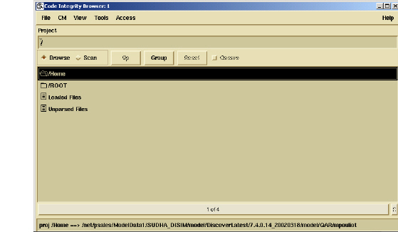

To start the model browser
1 Verify that $PSETHOME/bin is in your path.
2 Open an Xclient session.
3 Type
StartBrowser
If you are starting the model browser for the first time, the following message appears:
No default DIScover repository is known for the current user ($HOME/.codeintegrity).
Please select a repository:
If you started the model browser previously, proceed to step 5.
4 Type the path to your repository.
A list of DIScover model versions appears.
5 Type the number of the model version you want to connect to.
The model browser launches.
